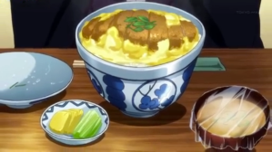

Katsu-don Recipes

pending a busy weekday night being questioned by the police after just getting transported from your magic-filled world to modern day Japan? Scared of cars? Dressed in capes? Can’t speak the language? Disdainful of humans? Sounds like you need a bowl of katsu-don.
Ingredients
- Tonkatsu, cut into 1 inch strips
- 1 tsp dry granulated dashi
- 3 tbsp soy sauce
- 2 tbsp sake
- 2 tbsp mirin
- 1 tbsp sugar
- a pinch of salt
- 1 cup water
- 1/2 an onion, sliced into 1/2 inch wedges
- 2 green onions, cut into 1 inch pieces
- 3 eggs, whipped
- 1/4 cup frozen peas
Toppings
- Cilantro
- Sesame seeds
- Shichimi togarashi
- Beni Shouga
Steps
- Place dashi, soy sauce, sake, mirin, sugar, salt, and water in a skillet on medium heat. When it begins to bubble, add in the sliced onion. Cover, and cook until soft, stirring occasionally, about 6-8 minutes.
- Sprinkle in the green onion to the pan, and add the tonkatsu in one layer on top of the onions. Pour the whipped eggs evenly into the pan and over the tonkatsu. Scatter the frozen peas on top. Cover and turn the heat to medium low. Cook until the eggs have reached a satisfactory consistency, about 6-8 minutes for soft eggs, and 10-12 for firmer eggs.
- ill a large bowl with rice. Spoon the egg and tonkatsu onto the rice, and garnish with cilantro, sesame seeds, shichimi togarashi, and/or beni shouga, if desired.